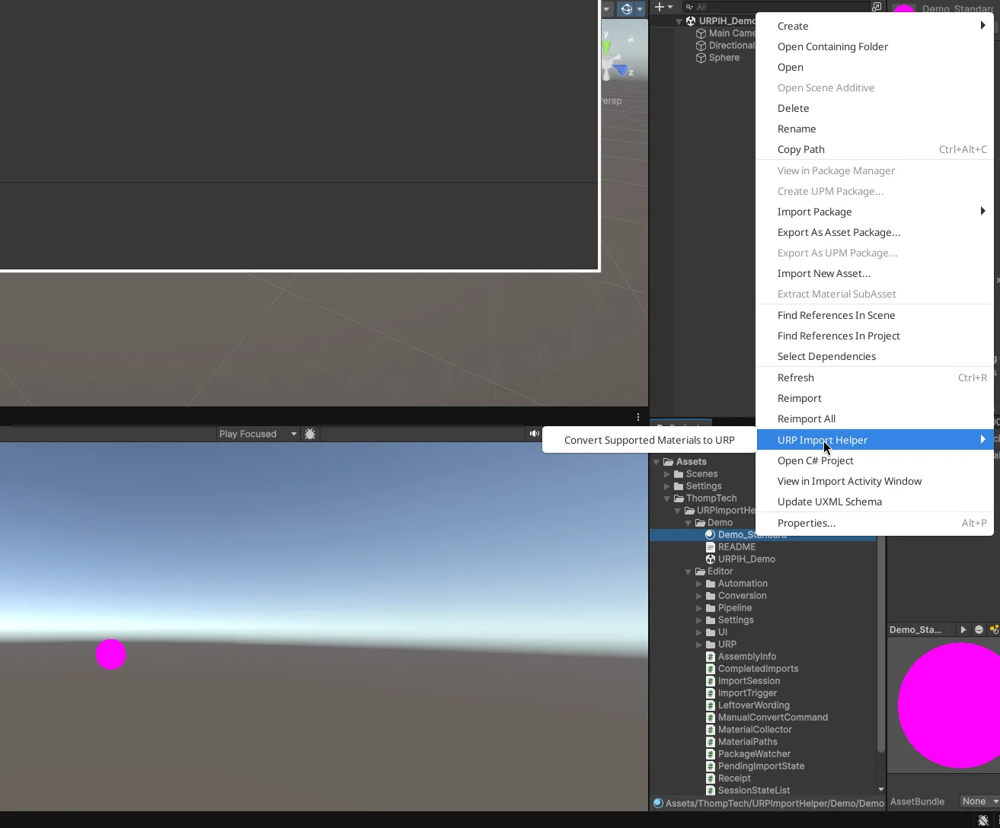

URP Import Helper by Thomp Tech
Import an asset package into your URP project as usual. URP Import Helper checks the materials in that import, safely converts supported Built-in Standard materials to URP/Lit, and explains what still needs attention.
Available exclusively on the Unity Asset Store.
How it works
Import an older Asset Store .unitypackage as usual. After Unity finishes importing and compiling, URP Import Helper checks the materials included in that import.
In the default Ask mode, a non-modal review window shows how many materials are ready to convert, plus warnings and materials that will remain unchanged.
Choose Convert or Not now. Supported materials become URP/Lit, and the whole batch is one named Edit > Undo step.

Convert Supported Materials to URP on the pink demo material" loading="lazy">Features
Converts standalone .mat assets from Built-in Standard (metallic workflow) to URP/Lit, only when they pass the safety checks. Everything else is left unchanged and explained.
Ask, Convert automatically, or Report Only (Change Nothing). Saved per user, per project.
The Console report covers counts, warnings and next steps. Expand Details and click a row to ping that material in the Project window.
Select .mat files or folders and convert on demand, in every mode, without importing another package.
Each converted batch is one named Unity Edit > Undo step, such as Convert 6 materials to URP. Reverted files are saved for you.
On Unity 6+, analyze and convert through the Unity CLI or an MCP-capable AI agent. Not required for normal Editor use.


Requirements
com.unity.pipeline 0.8.0-exp.1. See the CLI & MCP Quick Start.Limitations
Documentation
Install, try the included demo, and convert your first import.